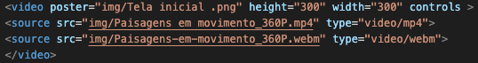
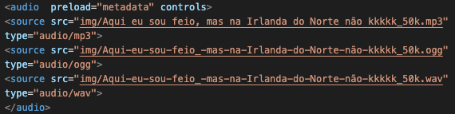
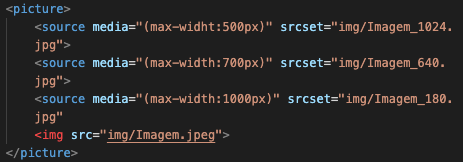

É uma forma de comunicação que combina diferentes formas de conteúdo, exemplo audio, imagens, textos, animações e vídeos.
| Tag | Definição | Sintaxe |
|---|---|---|
Iframe |
Incorpora outro documento (site) ao HTML. | |
| Site | Áudio | Vídeo |
| Tag | Definição | Sintaxe | Exemplo |
|---|---|---|---|
| Vídeo | Adiciona vídeo da maquina. |  | |
| Áudio | Adiciona áudio da maquina. |  | |
| Picture | Adiciona imagem da maquina. OBS:comando media>srcset são para adaptação da imagem em px. |
 |